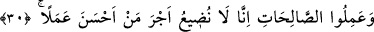

HAK, RABBIMIZ KATINDAN GELENDİR
28. Sabah akşam Rablerine, O’nun rızasını dileyerek duâ edenlerle birlikte
candan sebat et. Dünya hayatının süsünü isteyerek gözlerini onlardan çevirme.
Kalbini bizi anmaktan gafil kıldığımız, kötü arzularına uymuş ve işi gücü aşırılık
olan kimseye boyun eğme.
29. Ve de ki: Hak, Rabbinizdendir. Öyle ise dileyen îman etsin, dileyen inkâr
etsin. Biz, zalimlere öyle bir cehennem hazırladık ki, onun duvarları kendilerini
çepe çevre kuşatmıştır. (Susuzluktan) imdat dileyecek olsalar imdatlarına, erimiş
maden gibi yüzleri haşlayan bir su ile cevap verilir. Ne fenâ bir içecek ve ne kötü
bir kalma yeri!
30. Îman edip de güzel davranışlarda bulunanlar (bilmelidirler ki) biz, güzel işler
yapanların ecrini zâyi etmeyiz.
31. İşte onlara, zeminlerinden ırmaklar akan Adn cennetleri vardır. Onlar Adn
cennetlerinde tahtlar üzerine kurularak orada altın bileziklerle bezenecekler; ince
ve kalın ipekten yeşil elbiseler giyecekler. Ne güzel karşılık ve ne güzel kalma
yeri!
“Sabah akşam” günün evvelinde ve sonunda ettikleri duâlarla dünyalık bir şey değil
sırf “O’nun” Allah Teâlâ’nın “rızasını dileyerek duâ edenlerle birlikte candan sebat
et.” Onlarla sohbet ve beraberlikte dâim ol. “Sabah akşam” vakitlerinden murad,